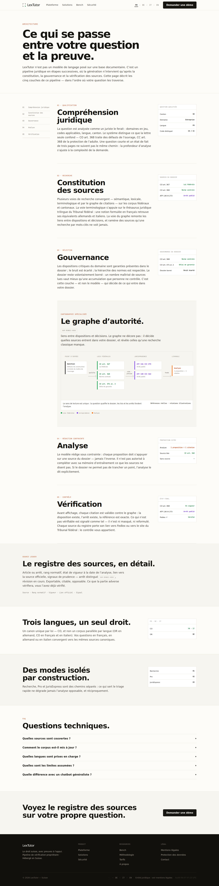
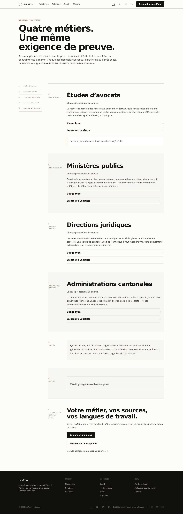
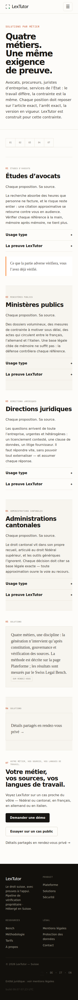
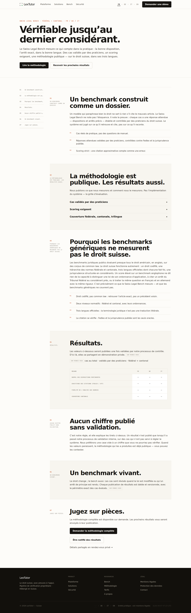
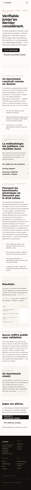
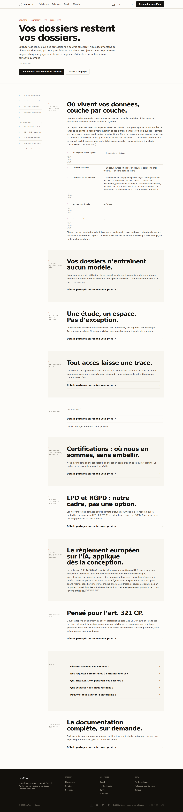
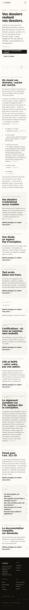
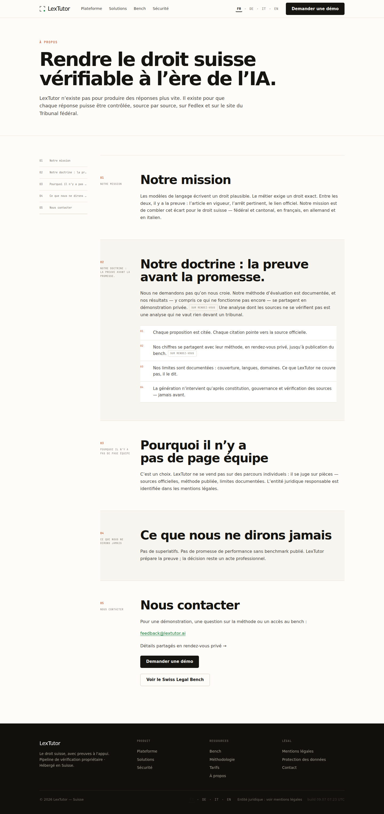
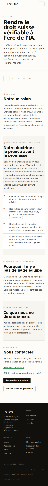

Version de revue séparée — elle ne remplace pas la référence publiée à la racine. La page Plateforme sert de référence de rythme, de marges, d’index et de statuts. Les quatre pages conservent chacune leur artefact propre.








